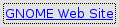
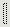

Class GTK2.Gnome2Href
- Description
This widget is a GtkButton button that contains a URL. When clicked it invokes the configured browser for the URL you provided.
GTK2.Gnome2Href( "http://www.gnome.org", "GNOME Web Site" )GTK2.Gnome2Href( "http://www.gnome.org" )Properties: string text string url
Style properties: GDK.Color link-color
- Inherit Button
inherit GTK2.Button : Button
- Method create
GTK2.Gnome2Href GTK2.Gnome2Href(stringurl,string|voidlabel)- Description
Created a GNOME href object, a label widget with a clickable action and an associated URL. If label is set to 0, url is used as the label.